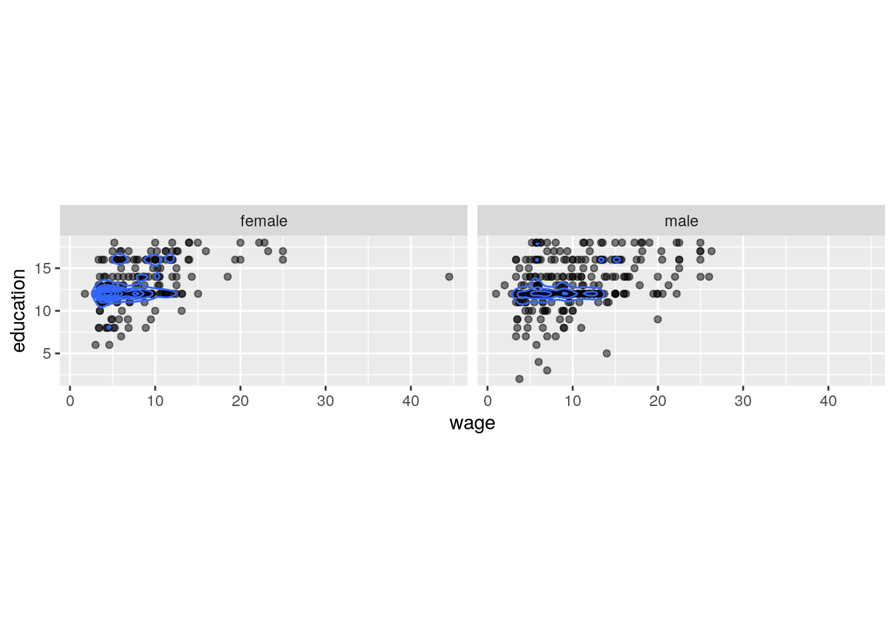
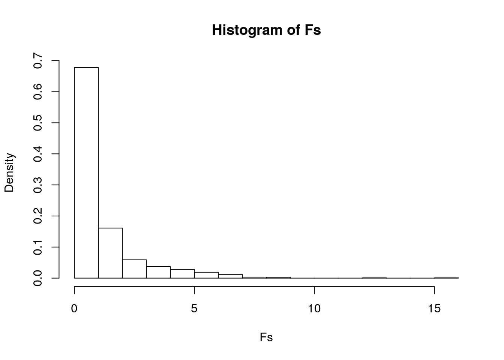
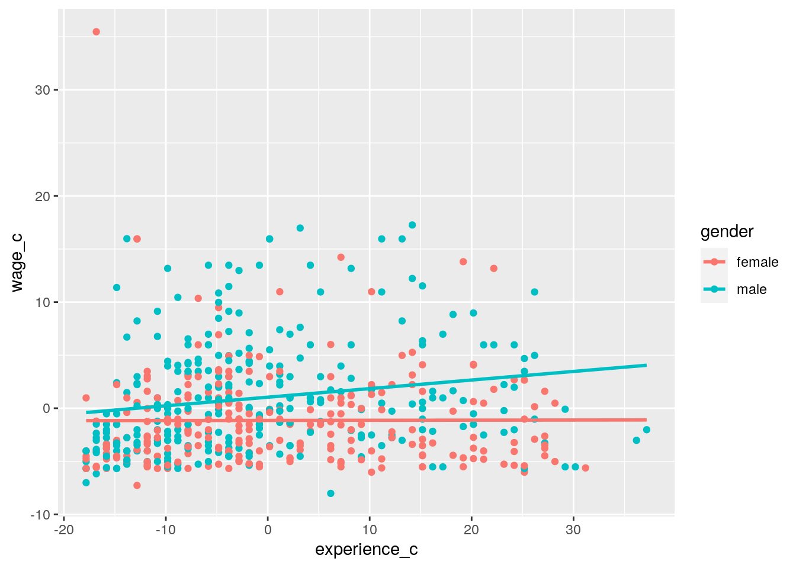
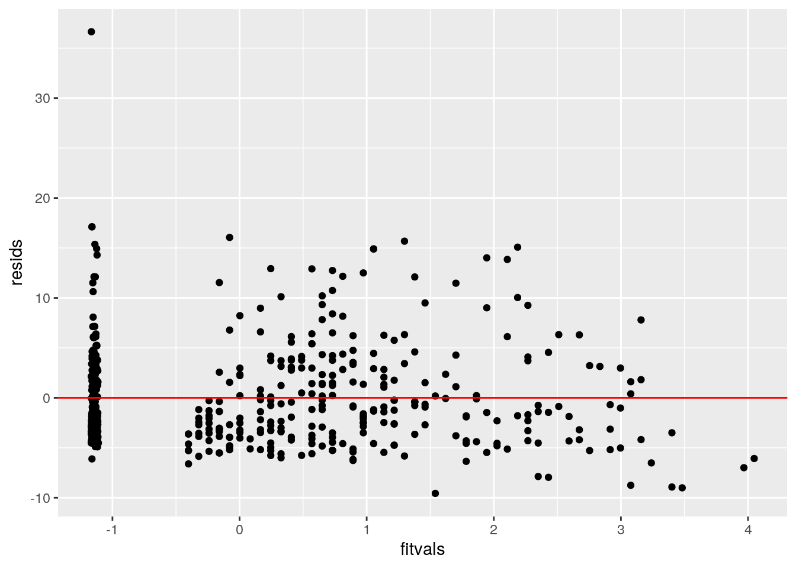
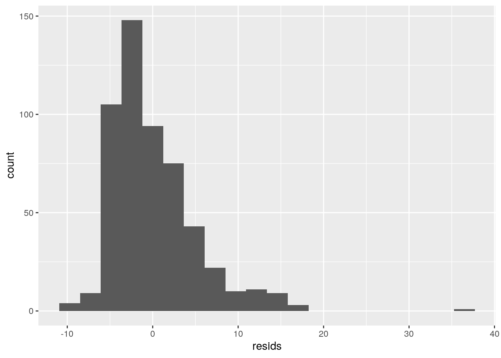
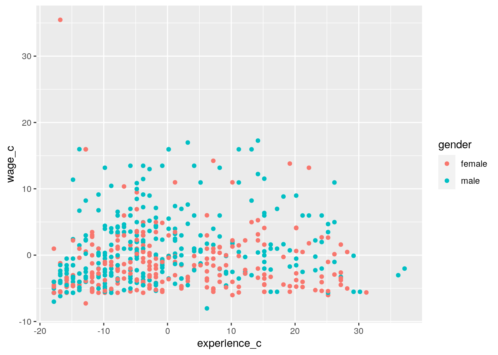
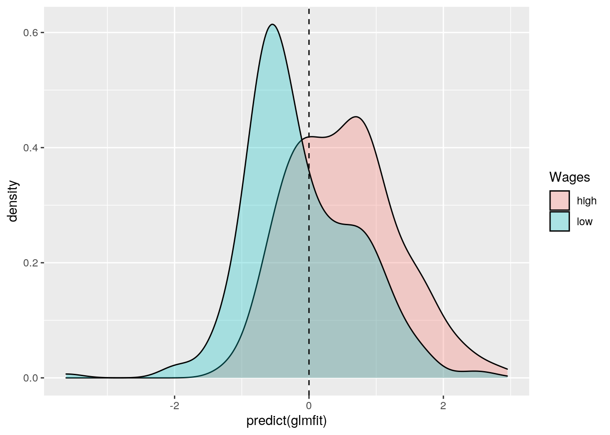
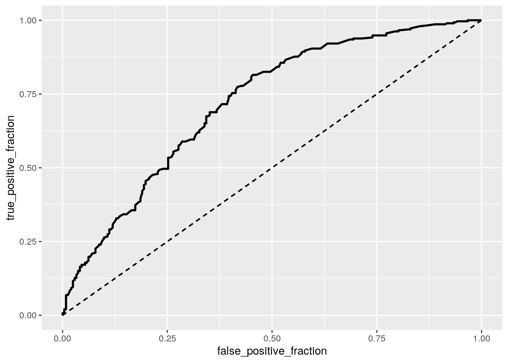

#Class diags
class_diag<-function(probs,truth){
tab<-table(factor(probs>.5,levels=c("FALSE","TRUE")),truth)
acc=sum(diag(tab))/sum(tab)
sens=tab[2,2]/colSums(tab)[2]
spec=tab[1,1]/colSums(tab)[1]
ppv=tab[2,2]/rowSums(tab)[2]
if(is.numeric(truth)==FALSE & is.logical(truth)==FALSE) truth<-as.numeric(truth)-1
#CALCULATE EXACT AUC
ord<-order(probs, decreasing=TRUE)
probs <- probs[ord]; truth <- truth[ord]
TPR=cumsum(truth)/max(1,sum(truth))
FPR=cumsum(!truth)/max(1,sum(!truth))
dup<-c(probs[-1]>=probs[-length(probs)], FALSE)
TPR<-c(0,TPR[!dup],1); FPR<-c(0,FPR[!dup],1)
n <- length(TPR)
auc<- sum( ((TPR[-1]+TPR[-n])/2) * (FPR[-1]-FPR[-n]) )
data.frame(acc,sens,spec,ppv,auc)
}library(ggplot2)
library(ggrepel)
library(tidyr)
library(tidyverse)## ── Attaching packages ───────────────────────────────────────────────────────────────────── tidyverse 1.3.0 ──## ✓ tibble 3.0.3 ✓ dplyr 1.0.1
## ✓ readr 1.3.1 ✓ stringr 1.4.0
## ✓ purrr 0.3.4 ✓ forcats 0.5.0## ── Conflicts ──────────────────────────────────────────────────────────────────────── tidyverse_conflicts() ──
## x dplyr::filter() masks stats::filter()
## x dplyr::lag() masks stats::lag()library(dplyr)
library(vegan)## Loading required package: permute## Loading required package: lattice## This is vegan 2.5-6library(plotROC)
library(sandwich)
library(lmtest)## Loading required package: zoo##
## Attaching package: 'zoo'## The following objects are masked from 'package:base':
##
## as.Date, as.Date.numericWage_Gap <- read.csv("Wage.csv", header = TRUE)
ncol(Wage_Gap)## [1] 7nrow(Wage_Gap)## [1] 534Introduction: The dataset I have chosen to work with comes from the U.S. Census Bureau which includes information on wage earnings from 1989. This dataset has 7 variables with 534 observations. The main variable I will be looking at throughout this project is wage in dollars/hour to see the effect of different determinants on hourly wage. The other variables I will be looking at include the paticipants' age, years of education, and their predicted work experience which is caculated by the following equation: work experience= age-(years of education)-6. I will also be looking at the participants' gender, union status, and marriage status to see if these determinants also have a significant effect on wage earnings.
#MANOVA
man1<-manova(cbind(wage,education,experience,age)~gender, data=Wage_Gap)
summary(man1)## Df Pillai approx F num Df den Df Pr(>F)
## gender 1 0.072867 10.394 4 529 4.131e-08 ***
## Residuals 532
## ---
## Signif. codes: 0 '***' 0.001 '**' 0.01 '*' 0.05 '.' 0.1 ' ' 1#ANOVA
summary.aov(man1)## Response wage :
## Df Sum Sq Mean Sq F value Pr(>F)
## gender 1 593.7 593.71 23.426 1.703e-06 ***
## Residuals 532 13483.0 25.34
## ---
## Signif. codes: 0 '***' 0.001 '**' 0.01 '*' 0.05 '.' 0.1 ' ' 1
##
## Response education :
## Df Sum Sq Mean Sq F value Pr(>F)
## gender 1 0.0 0.015 0.0022 0.9627
## Residuals 532 3645.8 6.853
##
## Response experience :
## Df Sum Sq Mean Sq F value Pr(>F)
## gender 1 462 462.31 3.028 0.08242 .
## Residuals 532 81224 152.68
## ---
## Signif. codes: 0 '***' 0.001 '**' 0.01 '*' 0.05 '.' 0.1 ' ' 1
##
## Response age :
## Df Sum Sq Mean Sq F value Pr(>F)
## gender 1 459 459.50 3.3563 0.06751 .
## Residuals 532 72835 136.91
## ---
## Signif. codes: 0 '***' 0.001 '**' 0.01 '*' 0.05 '.' 0.1 ' ' 1#Post-Hoc
pairwise.t.test(Wage_Gap$wage,Wage_Gap$gender, p.adj="none")##
## Pairwise comparisons using t tests with pooled SD
##
## data: Wage_Gap$wage and Wage_Gap$gender
##
## female
## male 1.7e-06
##
## P value adjustment method: none#Type-1-Error
1-(1-.05)^5## [1] 0.2262191#Bonferonni correction
0.05/5## [1] 0.01#Assumptions
WWage_Gap <- Wage_Gap%>%select(gender,wage,education,experience,age)
ggplot(WWage_Gap, aes(x = wage, y = education)) +
geom_point(alpha = .5) + geom_density_2d(h=2) + coord_fixed() + facet_wrap(~gender)
covmats<-WWage_Gap%>%group_by(gender)%>%do(covs=cov(.[2:5]))
for(i in 1:2){print(covmats$covs[i])}## [[1]]
## wage education experience age
## wage 22.2794700 5.049372 0.1829637 5.197563
## education 5.0493724 5.901037 -10.7868685 -4.934610
## experience 0.1829637 -10.786869 159.0825360 148.604399
## age 5.1975632 -4.934610 148.6043995 143.995049
##
## [[1]]
## wage education experience age
## wage 27.940258 5.232571 11.91468 17.147255
## education 5.232571 7.659530 -12.00299 -4.343462
## experience 11.914684 -12.002992 147.24880 135.245807
## age 17.147255 -4.343462 135.24581 130.902345The first step of my analysis was to conduct a MANOVA test to determine the effect of gender on wage, experience, education, and age. Significant differences were found between the two genders (Pillai Trace= .07, psuedo F= 4, 529, p<.01). Univariate ANOVAs then were conducted on each of the dependent variables, after which I found that only wage had a significant effect on gender (F(1, 532) = 23.426, p<,01). A post hoc t-test was also done out of convention but this was not necessary since there are only two genders. After excluding the t-test, there were a total of five tests done including the first MANOVA test and the four ANOVA tests. This means that we need to use a Bonferroni significance level of .01 instead of .05 which was already applied to the previous tests. There is also a 22.6% chance of a Type 1 Error. None of the tests' outcomes changed after applying the Bonferroni correction. After eyballing some of the assumptions, it does not seem like many of them will be met. We might be able to assume that we have random samples and independent observations. We can also say thateach group has n=25+ and that there may be linear relationships between dependent variables. But the multivariate normality and convariance suggest that most of our assumptions have not been met which shows how restrictive MANOVAs are.
#Ho= Mean wages are the same between men and women
#Ha= Mean wages are not the same between men and women
summary(aov(wage~gender,data=Wage_Gap))## Df Sum Sq Mean Sq F value Pr(>F)
## gender 1 594 593.7 23.43 1.7e-06 ***
## Residuals 532 13483 25.3
## ---
## Signif. codes: 0 '***' 0.001 '**' 0.01 '*' 0.05 '.' 0.1 ' ' 1#Ho= Group mean wages are the same across the two genders
#Ha= Group mean wages are not the same across the two genders
obs_F<-23.43
Fs<-replicate(1000,{
new<-Wage_Gap%>%mutate(wage=sample(wage))
SSW<- new%>%group_by(gender)%>%summarize(SSW=sum((wage-mean(wage))^2))%>%
summarize(sum(SSW))%>%pull
SSB<- new%>%mutate(mean=mean(wage))%>%group_by(gender)%>%mutate(groupmean=mean(wage))%>%
summarize(SSB=sum((mean-groupmean)^2))%>%summarize(sum(SSB))%>%pull
(SSB/1)/(SSW/532)
})
hist(Fs, prob=T); abline(v = obs_F, col="red",add=T)
#P-value
mean(Fs>obs_F)## [1] 0The next step in my analysis was to conduct a ANOVA/F-statistic randomization test. This was done by first conducting an ANOVA test between wage and gender. I discovered that there is a significant difference in wage between men and women (F= 23.43, df= 1, 532, p<.05). I then scrambled the data to destroy the association between gender and wage and found a null F-statistic where wage is the same between all genders. I then compared my actual F-statistic of 23.43 to this null F-statistic as seen in the histogram and found that my actual F-statistic is so far from the null F-statistic that it cannot even be seen. After comparing the two F-statistics, I also found a p-value=0. From this data, I can reject the null hypothesis and conclude that wages differ between the genders.
Wage_Gap1 <- Wage_Gap%>%mutate(Married=ifelse(married=="yes",1,0))
Wage_Gap1 <- Wage_Gap1%>%mutate(Gender=ifelse(gender=="male",1,0))
Wage_Gap1 <- Wage_Gap1%>%mutate(Union=ifelse(union=="yes",1,0))
Wage_Gap1 <- Wage_Gap1%>%mutate(education_c = education - mean(education, na.rm = T))
Wage_Gap1 <- Wage_Gap1%>%mutate(experience_c = experience - mean(experience, na.rm = T))
Wage_Gap1 <- Wage_Gap1%>%mutate(age_c = age - mean(age, na.rm = T))
Wage_Gap1 <- Wage_Gap1%>%mutate(wage_c = wage - mean(wage, na.rm = T))
#Linear regression model
linear <- lm(wage_c~gender*experience_c, data = Wage_Gap1)
summary(linear)##
## Call:
## lm(formula = wage_c ~ gender * experience_c, data = Wage_Gap1)
##
## Residuals:
## Min 1Q Median 3Q Max
## -9.564 -3.476 -1.194 2.361 36.642
##
## Coefficients:
## Estimate Std. Error t value Pr(>|t|)
## (Intercept) -1.14637 0.31993 -3.583 0.000371 ***
## gendermale 2.18654 0.43474 5.030 6.74e-07 ***
## experience_c 0.00115 0.02534 0.045 0.963809
## gendermale:experience_c 0.07977 0.03506 2.275 0.023310 *
## ---
## Signif. codes: 0 '***' 0.001 '**' 0.01 '*' 0.05 '.' 0.1 ' ' 1
##
## Residual standard error: 4.992 on 530 degrees of freedom
## Multiple R-squared: 0.06191, Adjusted R-squared: 0.0566
## F-statistic: 11.66 on 3 and 530 DF, p-value: 2.079e-07#Plot of the regression model
ggplot(Wage_Gap1, aes(x = experience_c, y = wage_c, group = gender)) +
geom_point(aes(color=gender)) + geom_smooth(method="lm", se=F,fullrange=T,aes(color=gender))## `geom_smooth()` using formula 'y ~ x'
#Equal variance assumption
resids<-linear$residuals
fitvals<-linear$fitted.values
ggplot()+geom_point(aes(fitvals,resids))+geom_hline(yintercept=0, color='red')
#Normally distributed residulas assumption
ggplot()+geom_histogram(aes(resids), bins=20)
#Linearity assumption
ggplot(Wage_Gap1,aes(experience_c,wage_c,color=gender))+geom_point()
#Robust Standard Errors
coeftest(linear, vcov=vcovHC(linear))##
## t test of coefficients:
##
## Estimate Std. Error t value Pr(>|t|)
## (Intercept) -1.1463688 0.3126248 -3.6669 0.0002703 ***
## gendermale 2.1865387 0.4413553 4.9541 9.786e-07 ***
## experience_c 0.0011501 0.0276886 0.0415 0.9668829
## gendermale:experience_c 0.0797652 0.0380319 2.0973 0.0364379 *
## ---
## Signif. codes: 0 '***' 0.001 '**' 0.01 '*' 0.05 '.' 0.1 ' ' 1In the next part of my analysis, I performed a linear regression model using gender and experience to predict wage. The predicted wage of a female with average job experience is -1.14637 dollars/hour. Females get an increase of 0.00115 dollars/hour for every increase in one year of job experience on average. For people of average experience, males make 2.19 more dollars/hour than women. Finally, the slope for experience on wage is 0.07977 higher for men than for women. I can also conclude that 5.66% of the variation in my outcome is explained by this model. I then made a plot of the linear regression model and checked for assumptions. Based on the graphs, it seems that I was able to meet the linearity and equal variance assumption but my residuals were not normally distributed. Nevertheless, I conducted a regression with robust standard errors which is used for data that has heteroskedasticity. With robust standard erros, my coefficient estimates were relatively the same compared to the linear regression model and no tests changed in significance. This makes sense given that my data exhibited homoskedasticity to start with.
#Bootstrap
set.seed(1234)
fit1<-lm(wage_c~gender*experience_c, data = Wage_Gap1)
resids<-fit1$residuals
fitted<-fit1$fitted.values
resid_resamp<-replicate(5000,{
new_resids<-sample(resids,replace=TRUE)
Wage_Gap1$new_y<-fitted+new_resids
fit1<-lm(new_y~gender*experience_c, data = Wage_Gap1)
coef(fit1)
})
resid_resamp%>%t%>%as.data.frame%>%summarize_all(sd)## (Intercept) gendermale experience_c gendermale:experience_c
## 1 0.3166713 0.4323944 0.02496104 0.03505083In the next step of my analysis, I ran the linear regression model again but with bootstrapped standard errors which is used when the data is heteroskedastic and non-normal. I bootsrapped by resamplng residuals. In general, increasing standard error causes the test-statistic to decrease, like the t-value for example, which means that our p-value increases. Therefore, as standard error increasess, we are less likely to reject our null hypothesis. When comparing the SEs of the bootstrapped model to the original model, the bootstrapped model has lower SE values, and thus lower p-values, for the intercept, gendermale, experience_c, and gendermale:experience_c. When comparing the SEs of the bootstrapped model to the robust model, the bootstrapped model has a higher SE value, and thus higher p-value, for the intercept only. The bootstrapped model also has lower SE values, and thus lower p-values, for gendermale, experience_c, and gendermale:experience_c compared to the original model.
library(plotROC)
Wage_Gap2<-Wage_Gap1%>%mutate(Wage=ifelse(wage>7.25,1,0))
Wage_Gap2<-Wage_Gap2%>%mutate(Wages=ifelse(wage>7.25,"high","low"))
#Logistic Regression Model
glmfit<-glm(Wage~experience+education, data=Wage_Gap2, family="binomial")
coeftest(glmfit)##
## z test of coefficients:
##
## Estimate Std. Error z value Pr(>|z|)
## (Intercept) -5.0326277 0.6560562 -7.6710 1.706e-14 ***
## experience 0.0459700 0.0085503 5.3764 7.598e-08 ***
## education 0.3413627 0.0444370 7.6819 1.567e-14 ***
## ---
## Signif. codes: 0 '***' 0.001 '**' 0.01 '*' 0.05 '.' 0.1 ' ' 1#Coefficients
exp(coef(glmfit))%>%data.frame()## .
## (Intercept) 0.006521651
## experience 1.047042963
## education 1.406863402#Confussion Matrix
prob<-predict(glmfit,type="response")
pred<-ifelse(prob>.5,1,0)
table(truth=Wage_Gap2$Wage, prediction=pred) %>% addmargins## prediction
## truth 0 1 Sum
## 0 153 89 242
## 1 89 203 292
## Sum 242 292 534#Accuracy
(153+203)/534## [1] 0.6666667#Sensitivity
(203)/292## [1] 0.6952055#Specificity
(153)/242## [1] 0.6322314#Precision
(203)/292## [1] 0.6952055#AUC with package
class_diag(prob, Wage_Gap2$Wage)## acc sens spec ppv auc
## 1 0.6666667 0.6952055 0.6322314 0.6952055 0.7203173#Density Plot
ggplot(Wage_Gap2, aes(predict(glmfit), fill=Wages)) +
geom_density(alpha=0.3) + geom_vline(xintercept=0, lty=2)
#ROC Plot
ROCplot<-ggplot(Wage_Gap2)+geom_roc(aes(d=Wage,m=prob), n.cuts=0)+
geom_segment(aes(x=0,xend=1,y=0,yend=1),lty=2)
ROCplot
#AUC
calc_auc(ROCplot)## PANEL group AUC
## 1 1 -1 0.7203173During the next part of my analysis, I ran a logistic regression model to see the effect of experience and education on wage. For the purposes of this study, I decided that wages lower than 7.25 dollars/hour were low and wages above this amount were high. The predicted odds of having a high hourly wage is 0.007 with no education and no experience. While controlling for education, every one additional year in work experience multiplies the odds of having a high wage by a factor of 1.047. While controlling for expereince, every one additional year in education multiplies the odds of having a high wage by a factor of 1.407. After running the regression, I then made a confusion matrix too see how my model's predictions compare to the true outcomes. My model correctly identified cases (accuracy) 66.67% of the time. The proportion of high wages correctly classified (sensitivity) is 69.52%. The proportion of low wages correctly classified (specificity) is 63.22%. The proportion classified as high low wages who actually are (precision) is 69.52%. The AUC, which was calculated using class_auc and class_diag, is 0.720 which means the model is a fair predictor of high and low wages. I then created an density plot of the log-odds and an ROC curve of the data. The ROC curve is fairly descent considering that it isn’t a straight line which indicates the model can fairly distinguish between cases. This conclusion is backed up by the AUC as previously stated.
library(tidyverse); library(lmtest)
library(plotROC)
library(pROC)## Type 'citation("pROC")' for a citation.##
## Attaching package: 'pROC'## The following object is masked from 'package:plotROC':
##
## ggroc## The following objects are masked from 'package:stats':
##
## cov, smooth, varlibrary(glmnet)## Loading required package: Matrix##
## Attaching package: 'Matrix'## The following objects are masked from 'package:tidyr':
##
## expand, pack, unpack## Loaded glmnet 4.0-2#Logistic regression with all variables
sixfit<-glm(Wage~age+Gender+experience+education+Married+Union,data=Wage_Gap2,family="binomial")
sixprob<-predict(sixfit,data="response")
class_diag(sixprob,Wage_Gap2$Wage)## acc sens spec ppv auc
## 1 0.6666667 0.5513699 0.8057851 0.7740385 0.767654#10-fold CV
set.seed(1234)
k=10
data<-Wage_Gap2[sample(nrow(Wage_Gap2)),]
folds<-cut(seq(1:nrow(data)),breaks=k,labels=F)
diags<-NULL
for(i in 1:k){
train<-data[folds!=i,]
test<-data[folds==i,]
truth<-test$Wage
fit<-glm(Wage~age+Gender+experience+education+Married+Union,data=Wage_Gap2,family="binomial")
probs<-predict(fit,newdata = test,type="response")
diags<-rbind(diags,class_diag(probs,truth))
}
summarize_all(diags,mean)## acc sens spec ppv auc
## 1 0.6889588 0.7240142 0.6442311 0.7126771 0.7627933#LASSO
y <- as.matrix(Wage_Gap2$Wage)
x <- model.matrix(Wage~Gender+age+experience+education+Married+
Union,data=Wage_Gap2,family="binomial")[, -1]
x <- scale(x)
cv <- cv.glmnet(x, y, family = "binomial")
lasso_fit <- glmnet(x, y, family = "binomial", lambda = cv$lambda.1se)
coef(lasso_fit)## 7 x 1 sparse Matrix of class "dgCMatrix"
## s0
## (Intercept) 0.20233518
## Gender 0.09987542
## age 0.21270324
## experience .
## education 0.43800001
## Married .
## Union 0.19948095#10-fold with LASSO
set.seed(1234)
k=10
data<-Wage_Gap2[sample(nrow(Wage_Gap2)),]
folds<-cut(seq(1:nrow(data)),breaks=k,labels=F)
diags<-NULL
for(i in 1:k){
train<-data[folds!=i,]
test<-data[folds==i,]
truth<-test$Wage
fit<-glm(Wage~Gender+age+education+Union,data=Wage_Gap2,family="binomial")
probs<-predict(fit,newdata = test,type="response")
diags<-rbind(diags,class_diag(probs,truth))
}
summarize_all(diags,mean)## acc sens spec ppv auc
## 1 0.6890636 0.7246162 0.6418135 0.7104331 0.7582767In the last part of my analysis, I conducted another logistic regression with all the variables. My model correctly identified cases (accuracy) 66.67% of the time. The proportion of high wages correctly classified (sensitivity) is 55.14%. The proportion of low wages correctly classified (specificity) is 80.58%. The proportion classified as high low wages who actually are (precision) is 77.40%. The AUC is 0.768 which means the model is a fair predictor of high and low wages. In fact, this model is better than the previous model with an AUC of .720. I then performed a 10-fold CV on the same model. The new model correctly identified cases (accuracy) 69.90% of the time. The proportion of high wages correctly classified (sensitivity) is 72.40%. The proportion of low wages correctly classified (specificity) is 64.42%. The proportion classified as high low wages who actually are (precision) is 71.27%. The AUC is 0.763 which means this model is also a fair predictor of high and low wages. However, since this AUC is lower than the in-sample metrics, we have evidence of overfitting. To reduce overfitting, I performed a LASSO on this model which retained gender, age, education, and union status as significant variables. Another 10-fold CV with the LASSO variables was performed which calculated an AUC of 0.758. Since this AUC is lower than the other two values, we can surmise that LASSO does not help create a better model. However the LASSO model is better at predicting wage than a logistic regression using experience and education alone.